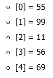
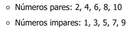
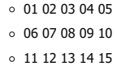
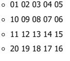
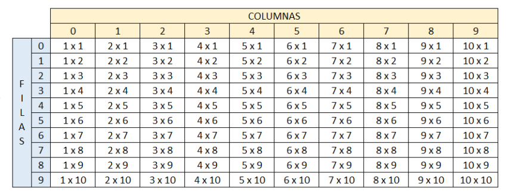

Funciones
Puntos del taller de Condicionales
-
Realizar un programa en el cual se solicite la edad de una persona. Si la persona es mayor o igual a 18 años, deberá mostrar en
pantalla: Usted es mayor de edad.
Códigos de la solución
-
Realizar un programa en el cual se solicite la edad de una persona. Si la persona es menor a 18 años, deberá mostrar en
pantalla: Usted aún es un niño(a).
Códigos de la solución
-
Realizar un programa en el cual se solicite el nombre, apellidos y edad de la persona. Si la persona es mayor o igual a 18 años,
entonce se deberá imprimir en pantalla [Nombre completo] usted es mayor de edad, por lo tanto puede entrar a la
fiesta. Si la edad de la persona es menor que 18 años, entonces, deberá imprimirse el siguiente mensaje: [Nombre
completo] usted es menor de edad, por lo tanto, no puede entrar a la fiesta, por favor devuélvase a su casa.
Códigos de la solución
-
La video tienda que presta sus servicios de alquiler de películas a los usuarios del barrio el Porvenir, requiere de una aplicación
que permita registrar el alquiler de las películas que adquieren sus usuarios. Para cada usuario se debe permitir la opción de
alquilar película, consultar películas disponibles y recibir película en la video tienda con la opción de realizar anotaciones sobre
estas si se llegan a presentar daños u otra novedad sobre la película.
Códigos de la solución
-
La Droguería Mi Salud presta sus servicios en la localidad de Suba y requiere una aplicación para poder facturar los productos
que vende a sus clientes y para ello, los productos tienen unas características que deben indicársele al cliente para que pueda
escoger el producto a comprar. Para cada cliente, se tienen las opciones de compra de producto, consulta de precios por
producto y devoluciones en caso de que se presenten.
Códigos de la solución
-
El taller de motos "El Maquinista" recibe motocicletas de alto cilindraje para realizar las respectivas revisiones y requiere una
aplicación que le permita registrar los servicios generados a sus clientes. Para cada motocicleta se debe tener registro del
ingreso al taller y las observaciones por parte del cliente. También debe existir registro de salida del taller con las novedades y
otra de arreglos hechos por el mecánico en caso de que se requiera inventariar cambios repuestos en la motocicleta al
entregarla.
Códigos de la solución
-
La Secretaría de Salud Municipal requiere de una aplicación que le permita calcular el IMC (Índice de masa corporal) y requiere
los datos peso en kilogramos y estatura en metros Para cada persona encuestada adicional a los datos suministrados, debe
mostrar el resultado para cada uno y establecer en qué rango se encuentra (bajo peso, normal, sobrepeso y obeso).
Códigos de la solución
-
El pastelero Don Carlos es el mejor pastelero de la ciudad y requiere una aplicación que le permita registrar los pedidos de los
clientes en cuanto a las tortas que realiza. Cada torta tiene unas características propias como sabor, cantidad (porciones) y
decoraciones). Se requiere que la aplicación permita registrar los pedidos, las tortas disponibles y las ventas que se registren
diariamente.
Códigos de la solución
-
El profesor de geometría está explicando a sus estudiantes las fórmulas para calcular el área de diferentes figuras geométricas,
para ello requiere una aplicación que le facilite el ejercicio solicitándole los valores al estudiante. La aplicación debe permitir que
el estudiante seleccione si desea calcular el área de un rectángulo, triángulo o trapecio. No olvide solicitar los datos necesarios
para realizar cada cálculo y mostrar su respectivo resultado.
Códigos de la solución
-
El banco "Su banco fiel" es un banco que inicia sus actividades financieras y necesita una aplicación para llevar las cuentas de
sus usuarios; por lo tanto, se sugiere que la cuenta tenga los atributos titular y cantidad. Para cada cliente las cuentas permitirán
realizar ingresos, retiros o consultas de valor. En los ingresos no se pueden insertar valores negativos y para los retiros el valor
no puede ser mayor al valor que tiene en la cuenta.
Códigos de la solución
Puntos del taller de Ciclos
-
Se está creando una aplicación que va a estar conectada con un prototipo que permita almacenar contactos telefónicos en el
dispositivo. Para ello cada contacto debe contener nombre completo, teléfono y organización. Se requiere que la aplicación
permita añadir 3 contactos verificando que el número no esté almacenado, buscar contactos almacenados y eliminar contactos si
el usuario lo requiere. Recuerde que el sistema debe terminar cuando el usuario así lo indique.
Códigos de la solución
-
El parqueadero "El guardián" presta sus servicios de parqueadero nocturno para los usuarios del barrio y requiere una aplicación
que permita registrar los vehículos que se cuidan en estas instalaciones. Se sugiere que el parqueadero tenga los atributos del
vehículo como son, placa y marca, y los datos del cliente como son nombre completo y número de teléfono. Para cada vehículo
se debe permitir la opción de ingresar al parqueadero, retirar del parqueadero y consultar si un vehículo se encuentra en el
parqueadero. Recuerde que el sistema debe terminar cuando el usuario así lo indique. Tenga en presente que el parqueadero
solo puede almacenar máximo 5 vehículos.
Códigos de la solución
-
La escuela automovilística "El Maestro" requiere una aplicación que permita registrar a sus clientes en los cursos de enseñanza
automovilística y establecer quienes lo han aprobado para continuar con el trámite de adquirir la licencia de conducción. Para
cada usuario se debe permitir registrar su ingreso al curso, consultar usuarios que hayan presentado el curso y resultados de la
prueba del curso (si fueron aprobados o no). Recuerde que el sistema debe terminar cuando el usuario así lo indique. Tenga
presente que la escuela tiene capacidad máxima de gestionar 8 usuarios en su totalidad.
Códigos de la solución
Puntos del taller de Arreglos
-
Crear un vector de tipo Entero con 5 posiciones, llenarlo con información solicitada al usuario. Después de recoger toda
información, se requiere imprimir el índice de cada posición en el arreglo con su valor de la siguiente manera:

Códigos de la solución
-
Crear un arreglo de números enteros de 20 posiciones, el cual, debe ser llenado con números aleatorios entre 1 y 100; despué
de haber llenado dicho arreglo, se debe volver a recorrer utilizando un ciclo diferente al que se usó para llenarse e imprimir lo
números pares e impares. Ejemplo

Códigos de la solución
-
Imprimir los números primos del 1 al 1000, el resultado debe ser buscado
de forma matemática.
Códigos de la solución
-
Dada la siguiente matriz bidimensional, el cual debe de quemar en el código.

Utilizando el conocimiento adquirido, a excepción de hacerlo de forma manual,
imprima la siguiente matriz bidimensional.

Códigos de la solución
-
Se debe de imprimir el siguiente cuadro:

El usuario deberá insertar la fila y columna de la cual desea ver el resultado, el resultado de cada celda debe esta
previamente calculado en una matriz bidimensional la cual cada resultado obedecerá a la fila y columna insertada por e
usuario.
Códigos de la solución